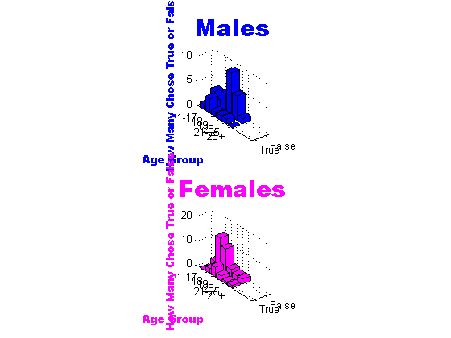

load('testredvar');
redresult = result;
load('testgreenvar');
greenresult = result;
load('testbluevar');
blueresult = result;
allresult = [blueresult;greenresult;redresult];
mresults = []; fresults = [];
for j = 1:(length(allresult));
if allresult(j,1) == 'm'
mresults = [mresults; allresult(j,:)];
elseif allresult(j,1) == 'f'
fresults = [fresults; allresult(j,:)];
end
end
oneresallm = [];
eighteenresallm = [];
nineteenresallm = [];
twentyresallm = [];
twentyoneresallm = [];
twentyfiveresallm = [];
mresult = [(str2num(mresults(:,2:3)))];
for k = 1:length(mresult)
if (1<=mresult(k,:)) && (17>=mresult(k,:))
oneresallm = [oneresallm; mresults(k,:);];
elseif mresult(k,:) == 18
eighteenresallm = [eighteenresallm; mresults(k,:)];
elseif mresult(k,:) == 19
nineteenresallm = [nineteenresallm; mresults(k,:)];
elseif mresult(k,:) == 20
twentyresallm = [twentyresallm; mresults(k,:)];
elseif 21<=mresult(k,:) && mresult(k,:)<=25
twentyoneresallm = [twentyoneresallm; mresults(k,:)];
elseif mresult(k,:)>25
twentyfiveresallm = [twentyfiveresallm; mresults(k,:)];
end
end
oneresallf = [];
eighteenresallf = [];
nineteenresallf = [];
twentyresallf = [];
twentyoneresallf = [];
twentyfiveresallf = [];
fresult = [(str2num(fresults(:,2:3)))];
for k = 1:length(fresults)
if 1<=fresult(k,:) && 17>=fresult(k,:)
oneresallf = [oneresallf; fresults(k,:);];
elseif fresult(k,:) == 18
eighteenresallf = [eighteenresallf; fresults(k,:)];
elseif fresult(k,:) == 19
nineteenresallf = [nineteenresallf; fresults(k,:)];
elseif fresult(k,:) == 20
twentyresallf = [twentyresallf; fresults(k,:)];
elseif 21<=fresult(k,:) && fresult(k,:)<=25
twentyoneresallf = [twentyoneresallf; fresults(k,:)];
elseif fresult(k,:)>25
twentyfiveresallf = [twentyfiveresallf; fresults(k,:)];
end
end
tfoneallm = [(sum(oneresallm(:,4) == 't')), (sum(oneresallm(:,4) == 'f'))];
tfeighteenallm =[(sum(eighteenresallm(:,4) == 't')), (sum(eighteenresallm(:,4) == 'f'))];
tfnineteenallm = [(sum(nineteenresallm(:,4) == 't')), (sum(nineteenresallm(:,4) == 'f'))];
tftwentyallm = [(sum(twentyresallm(:,4) == 't')), (sum(twentyresallm(:,4) == 'f'))];
tftwentyoneallm = [(sum(twentyoneresallm(:,4) == 't')), (sum(twentyoneresallm(:,4) == 'f'))];
tftwentyfiveallm = [(sum(twentyfiveresallm(:,4) == 't')), (sum(twentyfiveresallm(:,4) == 'f'))];
tfoneallf = [(sum(oneresallf(:,4) == 't')), (sum(oneresallf(:,4) == 'f'))];
tfeighteenallf =[(sum(eighteenresallf(:,4) == 't')), (sum(eighteenresallf(:,4) == 'f'))];
tfnineteenallf = [(sum(nineteenresallf(:,4) == 't')), (sum(nineteenresallf(:,4) == 'f'))];
tftwentyallf = [(sum(twentyresallf(:,4) == 't')), (sum(twentyresallf(:,4) == 'f'))];
tftwentyoneallf = [(sum(twentyoneresallf(:,4) == 't')), (sum(twentyoneresallf(:,4) == 'f'))];
tftwentyfiveallf = [(sum(twentyfiveresallf(:,4) == 't')), (sum(twentyfiveresallf(:,4) == 'f'))];
maleresall = [tfoneallm(:,1) tfoneallm(:,2); tfeighteenallm(:,1) tfeighteenallm(:,2); tfnineteenallm(:,1) tfnineteenallm(:,2); tftwentyallm(:,1) tftwentyallm(:,2); tftwentyoneallm(:,1) tftwentyoneallm(:,2); tftwentyfiveallm(:,1) tftwentyfiveallm(:,2)];
femaleresall = [tfoneallf(:,1) tfoneallf(:,2); tfeighteenallf(:,1) tfeighteenallf(:,2); tfnineteenallf(:,1) tfnineteenallf(:,2); tftwentyallf(:,1) tftwentyallf(:,2); tftwentyoneallf(:,1) tftwentyoneallf(:,2); tftwentyfiveallf(:,1) tftwentyfiveallf(:,2)];
subplot(2,1,1); bar3(maleresall, 'b'); ylabel('Age Group', 'color' ,'b', 'fontname', 'arial black'); zlabel('How Many Chose True or False', 'color', 'b', 'fontname', 'arial black'); title('Males', 'color', 'b', 'fontname', 'arial black', 'fontsize', 22); set(gca,'XTickLabel', {'True', 'False'},'YTickLabel', {'1-17', '18', '19', '20', '21-25', '25+'} );
subplot(2,1,2); bar3(femaleresall, 'm'); set(gca,'XTickLabel', {'True', 'False'},'YTickLabel', {'1-17', '18', '19', '20', '21-25', '25+'}); ylabel('Age Group', 'color', 'm', 'fontname', 'arial black'); zlabel('How Many Chose True or False', 'color', 'm', 'fontname', 'arial black'); title ('Females', 'color', 'm', 'fontname', 'arial black', 'fontsize', 22);
